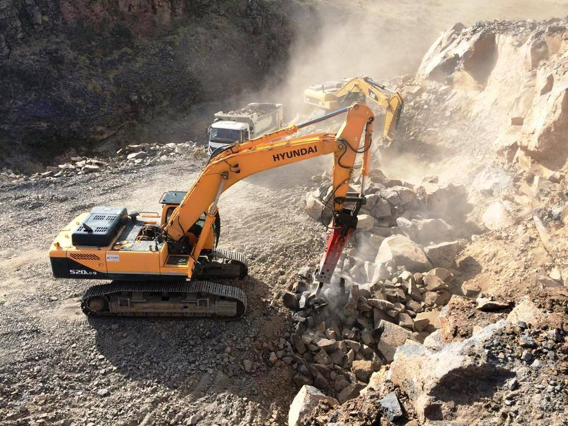

Zemin düzeltme (tesviye), bir arazinin belirli bir kot referansına göre düzleştirilmesi, eğim verilmesi veya istenilen şekle getirilmesi işlemidir. İnşaat öncesi temel zemininin hazırlanması, yol altyapı çalışmaları, tarım arazilerinin ıslahı, peyzaj düzenlemeleri ve spor sahalarının inşası gibi birçok alanda zemin tesviyesi yapılır. Erzurum'da zemin düzeltme işlemleri, özellikle inşaat sezonu olan Mayıs-Ekim aylarında yoğunlaşır. Doğru ekipman ve teknikle yapılan tesviye, üzerine inşa edilecek yapının veya kaplamanın uzun ömürlü ve stabil olmasını sağlar.
Zemin Düzeltme (Tesviye) Aşamaları
Profesyonel bir zemin tesviyesi aşağıdaki adımlardan oluşur:
📐 1. Ölçüm ve Aplikasyon (Kot Belirleme)
Tesviye işleminin ilk ve en kritik adımı, arazinin mevcut kotlarının ölçülmesi ve projede belirtilen hedef kotların araziye işaretlenmesidir. Bu işlem için:
- ✅ Nivo veya Total Station gibi hassas ölçüm cihazları kullanılır.
- ✅ Arazi üzerinde belirli aralıklarla kot kazıkları çakılır ve üzerlerine hedef kotlar yazılır.
- ✅ Kazı ve dolgu yapılacak alanların sınırları kireç veya sprey boya ile belirlenir.
Yanlış kotlandırma, tüm tesviye işleminin hatalı olmasına ve ilerleyen aşamalarda ciddi sorunlara yol açar.
⛏️ 2. Bitkisel Toprağın Sıyrılması
Tesviye yapılacak alandaki bitkisel toprak (nebati toprak), organik madde içerdiği için dolgu malzemesi olarak kullanılamaz. Bu nedenle ilk iş olarak yüzeydeki bitkisel toprak tabakası (genellikle 10-30 cm) ekskavatör veya greyder yardımıyla sıyrılarak sahanın uygun bir köşesinde depolanır. Erzurum'da bu toprak daha sonra peyzaj ve çevre düzenlemesinde kullanılabilir.
🚜 3. Kazı ve Dolgu İşlemleri
Kot kazıkları referans alınarak, yüksek kotta kalan (fazla) kısımlar kazılır ve düşük kotta kalan (eksik) kısımlara doldurulur. Bu işlem için kullanılan başlıca ekipmanlar:
- Ekskavatör (Kepçe): Yüksek hacimli kazı ve yükleme işleri için.
- Greyder: Geniş alanların hassas tesviyesi ve yüzey düzeltmesi için en ideal makinedir.
- Loder (Yükleyici): Malzeme yükleme, kısa mesafe taşıma ve kaba tesviye için.
- Damperli Kamyon: Kazılan fazla malzemenin saha dışına taşınması veya dışarıdan dolgu malzemesi getirilmesi için.
📏 4. Tabakalı Sıkıştırma
Dolgu yapılan alanlarda, zeminin taşıma gücünü artırmak ve ileride oturmaları önlemek için dolgu malzemesi belirli kalınlıklarda (genellikle 20-30 cm) serilir ve her tabaka ayrı ayrı sıkıştırılır. Sıkıştırma için:
- Titreşimli Silindir: Geniş alanlar ve stabilize dolgular için en etkili ekipmandır.
- Kompaktör (Tokmak): Dar alanlar, hendek dolguları ve silindirin giremediği yerler için kullanılır.
Erzurum'da don etkisine karşı dolgu malzemesinin donma-çözülmeye dayanıklı, temiz kum-çakıl (stabilize) olması ve iyi sıkıştırılması hayati önem taşır.
🧹 5. Son Tesviye ve Yüzey Temizliği
Kazı ve dolgu işlemleri tamamlandıktan sonra greyder veya loder ile son düzeltmeler yapılır. Yüzeydeki taş, kök ve diğer istenmeyen malzemeler temizlenir. Tesviye edilen alan, üzerine gelecek yapı (temel, yol, otopark vb.) için hazır hale getirilir.
Zemin Tesviyesinde Kullanılan Başlıca Ekipmanlar
| Ekipman | Kullanım Amacı | Erzurum'da Kullanım |
|---|---|---|
| Greyder | Hassas yüzey tesviyesi, eğim verme | Yol altyapısı, geniş arazi tesviyesi |
| Ekskavatör | Kazı, yükleme, kaba tesviye | Temel kazısı, yüksek kot farkı olan araziler |
| Loder | Malzeme yükleme, kısa mesafe taşıma | Dolgu malzemesi serimi, stoklama |
| Titreşimli Silindir | Dolgu sıkıştırma | Yol, otopark, temel altı dolguları |
| Kompaktör (Tokmak) | Dar alan sıkıştırması | Hendek dolguları, temel kenarları |
Erzurum'da Zemin Düzeltme Yaparken Dikkat Edilmesi Gerekenler
- ❄️ Don Etkisi: Tesviye edilecek alanda dolgu kullanılacaksa, malzemenin donma-çözülmeye dayanıklı (stabilize, kum-çakıl) olması şarttır. Bitkisel toprak veya kil içeren malzeme don etkisiyle kabarır ve tesviyeyi bozar.
- ⛰️ Kaya Zeminler: Erzurum'un birçok bölgesinde yüzeye yakın kaya zemin bulunur. Tesviye sırasında kaya çıkması durumunda hidrolik kırıcılı ekskavatör ile parçalama yapılması gerekir.
- 💧 Drenaj: Tesviye edilen alanın su tahliyesi mutlaka planlanmalıdır. Aksi halde biriken su, donma-çözülme ile zemine zarar verir. Yüzeye uygun eğim (%1-2) verilmelidir.
- 📏 Kot Kontrolü: Özellikle geniş alanlarda, tesviye sırasında sık sık kot kontrolü yapılmalı, hedef kottan sapmalar anında düzeltilmelidir.
- 🧊 Kış Aylarında Tesviye: Donlu zeminde tesviye yapmak hem zor hem de sakıncalıdır. Don çözüldüğünde zemin oturmaları ve düzensizlikler meydana gelir. Mümkünse tesviye işleri Mayıs-Ekim arası yapılmalıdır.
Zemin Düzeltme (Tesviye) Hangi Alanlarda Kullanılır?
- 🏗️ Bina Temelleri: Radye temel veya mütemadi temel öncesi zeminin düzeltilmesi ve sıkıştırılması.
- 🛣️ Yol Altyapısı: Yol güzergahının kazı-dolgu dengesi ile tesviye edilmesi.
- 🅿️ Otopark ve Saha Betonları: Beton dökümü öncesi zeminin istenilen kotta düzeltilmesi.
- 🌳 Peyzaj ve Spor Sahaları: Futbol sahası, park, bahçe gibi alanların tesviyesi.
- 🌾 Tarım Arazileri: Sulama verimliliğini artırmak için arazi tesviyesi.
📞 Erzurum'da Profesyonel Zemin Tesviyesi Hizmeti İçin Bize Ulaşın
ME-KA İnşaat, greyder, ekskavatör, silindir filosu ve deneyimli ekibiyle arazilerinizi projeye uygun şekilde tesviye eder. Ücretsiz keşif ve fiyat teklifi alın.
✅ Hassas kotlandırma + güçlü ekipman + zamanında teslim
Sık Sorulan Sorular
Tesviye işlemi kaç gün sürer?
Arazinin büyüklüğüne, kot farkına ve zeminin cinsine göre değişir. 500 m² bir arsanın tesviyesi 1-2 gün, dönümlerce arazi haftalar sürebilir.
Tesviye için hangi makine gerekir?
İşin ölçeğine göre greyder, ekskavatör, loder ve silindir kullanılır. En ideal makine greyderdir.
Erzurum'da kışın tesviye yapılır mı?
Donlu zemin nedeniyle önerilmez. Don çözüldüğünde zeminde bozulmalar meydana gelir.
Tesviye fiyatları nasıl belirlenir?
Alanın büyüklüğü (m²), kazı-dolgu miktarı, zeminin cinsi ve kullanılacak ekipmanlara göre fiyat değişir.
Tesviye sonrası zemin ne kadar oturur?
İyi sıkıştırılmış stabilize dolgularda oturma minimumdur. Sıkıştırılmamış dolgularda ciddi oturmalar olabilir.